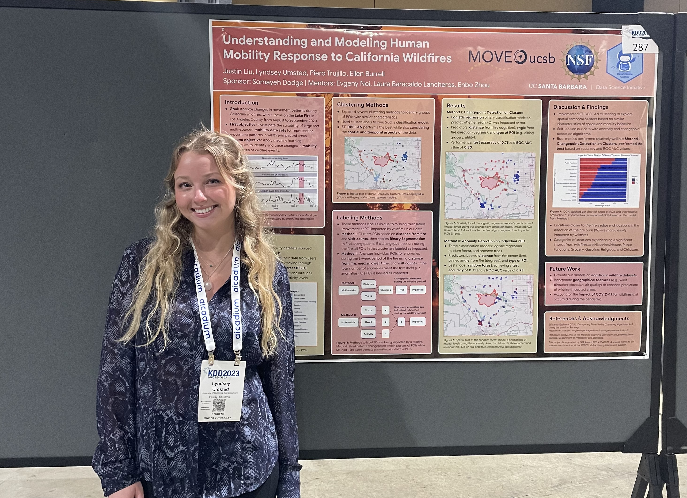

The following are projects I competed during my undergraduate work
which showcase the skills I learned and developed in the areas
of data analysis, machine learning, and both independent and
collaborative research.
Predicting Covid-19 Risk in California Communities
Between October and December of 2022, I had the
opportunity to complete an individual machine
learning project as a part of my Machine Learning
course (PSTAT 131). With inspiration from the
project I completed just prior on disease risk
for cutaneous leishmaniasis in the Amazon, I
pursued a similar topic but with Covid-19 in
California. I was provided data from faculty
Dr. Andrew MacDonald who was my PI in the
undergraduate research assistant position.
The first goal of this project was to build and
deploy machine learning models which could
accurately predict California zip codes into low,
moderate, or high risk for Covid-19. Secondly I
wanted to answer the questions of what factors in
a population have underlying effects on the number
of Covid-19 Cases, what kinds of populations are
at higher risk for Covid-19 outbreaks, is there
evidence of socioeconomic correlation with higher
Covid-19 rates, and is there evidence of pollution
level effects on Covid-19 rates?
I explored each of these goals and questions in order
to grasp a better understanding of the data and
dynamics behind Covid-19 rates in California in
the year 2020. I trained nine machine learning models
including: Linear Discriminant Analysis, Quadratic
Discriminant Analysis, Naive Bayes Classifier, K
Nearest Neighbors, Single Classification Decision
Tree, Bootstrap Aggregated Decision Tree, Random
Forest, Extreme Gradient Boosted Tree, and
Elastic-Net Regression. Each of the models were
trained using k-fold cross validation and their
performance was compared using their accuracy
scores and Area Under the Receiver Operating
Characteristic (AUROC) Curve. The model that
performed the best on the testing set was the
Bootstrap Aggregated Decision Tree (Bagged Tree)
with an accuracy of 0.71 and an AUROC of 0.9.
Using this model I then explored the most important
variables and performed some post-exploratory
analysis.
Through exploratory data analysis I found that there
is a large correlation between socioeconomic factors
such as poorer education, high poverty rate, low
median family income, and linguistic isolation and
high risk for Covid-19 outbreaks. These relationships
point to how communities struggling with more
socioeconomic problems are at a disproportionate
risk for Covid-19 outbreaks. As a result of this
project, I would consider the Covid-19 pandemic a
public health concern as well as a socioeconomic
concern. The entire project repository as well as
a more in depth report can be found on my
Github.
Understanding and Modeling Human Mobility Response to California Wildfires
During my third year of my undergaduate, I was accepted
into UC Santa Barbara's year long Data Science Capstone.
Beginning in January of 2023 I joined three other capstone
members as a project group for the Movement Data Science
Lab on campus run by Associate Professor of Spatial Data
Science, Somayeh Dodge, in the Department of Geography.
The MOVE Lab Data Science Capstone Project was centered
around exploring and modeling human mobility responses
to California wildfires. Our project and methods used
human movement data at each place of interest (POI)
surrounding specific wildfires, and in particular, this
case study focused primarily on the Lake Fire from Los
Angeles County in 2020.
This project is a case study
in using self-supervised learning to address the challenge of quantifying
human movement patterns in cases of natural disaster. We
leveraged smartphone tracking data from multiple sources on activity
at several Places of Interest (POIs) surrounding wildfire locations
to understand the human mobility response to the Lake Fire in Los
Angeles County in 2020. Spatiotemporal clustering was used to group
POIs based on activity over time and geography, and subsequently we
applied binary segmentation on aggregated activity data to infer the
impactedness of each cluster. We then trained a classification model to
predict whether a location is impacted by the fire based on location
attributes, proximity, and direction.
As a part of our work, we demonstrated the
superiority of this clustering-based approach over for anomaly
detection on a location-by-location basis. Our final logistic regression model had an accuracy of 0.75 and an Area Under the Receiver Operating Characteristic (AUROC) Curve of 0.80. The predictions from
the model allow us to understand what areas are at most risk for
an influx or outflux of human activity during wildfire events, and
using our preferred method we identified higher risk of impact (i)
near the fire, (ii) in the direction of burn, and (iii) at location types
expected to be sensitive to human mobility response.
We note that the COVID-19 pandemic substantially complicates
inference of impactedness; our method does not distinguish impact
due to the fire from impact due to COVID-19. The confounding of
these two events in our case study likely diminishes the predictive
performance of our model.
This research could be extended by augmenting the training data
to span multiple fires and incorporating additional geographical
features (e.g., wind direction, elevation, air quality, etc.). A more
robust model trained on data from multiple fires could potentially
be used to generate spatial contours of impact risk based on fire
attributes and geography alone; such an extension of our work has
the potential to support assessment and estimation of wildfire risk
on movement flows in Californian communities, which could in
turn improve disaster response planning.
This project was submitted and accepted by the KDD 2023
Southern California Data Science Day as a part of the ACM
KDD Conference in Long Beach, California in August of 2023.
The pdf abstract
can be found here to learn more details about the project methods and
results.
This project is supported by NSF Award BCS No. 2043202 and
partially supported with a fellowship from NSF under Award No.
1924205. Activity index data provided by ©MapBox.
Poster

Poster Presentation at ACM KDD 2023 in Long Beach, CA

Forecasting the United States' Unemployment Rate in the Absence of the Covid-19 Pandemic
In one of my final courses taken at UC Santa Barbara, Time Series Analysis,
I had the opportunity to complete an individual time series project
on a topic and data set of my choosing. I decided upon the unemployment
rate, a measure which is highly impacted by economic recessions and other
events. Thus, I was curious to investigate the impact of the Covid-19
Pandemic on the unemployment rate, and predict what this rate would
have been if this event were not to have occured.
The purpose of this time series project is to forecast the United States’ unemployment rate into the
years 2020 through 2023 using data from 2010 through 2018 with 2019 as validation. The main
questions addressed in this analysis are: how do the predicted unemployment levels from January of
2020 to the present differ from the observations seen with the Covid-19 Pandemic? Are the
unemployment rates in the past three to four years much higher than what a predictive model would
forecast?
Bhe purpose of this time series project is to forecast the United States’ unemployment rate into the
years 2020 through 2023 using data from 2010 through 2018 with 2019 as validation. The main
questions addressed in this analysis are: how do the predicted unemployment levels from January of
2020 to the present differ from the observations seen with the Covid-19 Pandemic? Are the
unemployment rates in the past three to four years much higher than what a predictive model would
forecast?
Using the fitted model, I was able to validate the model’s ability to forecast into the year 2019. I then
observed and compared the model’s predicted values with the actual time series of the United State’s
unemployment rate through October of 2023. I found that not only do current unemployment rates lie
above the forecast 95% confidence interval, but they are also two times higher than the predicted
unemployment rate, meaning twice as many Americans are out of work than what the SARIMA model
forecasts in the absence of the Covid-19 Pandemic.
Forecasting unemployment rates is important to measure future economic stability. Being able to
compare predictions to observations when an anomalous event happens allows us to measure the
impact significance to prepare for future events.
Unemployment Rate Prediction

The project repository can be found on my
Github.